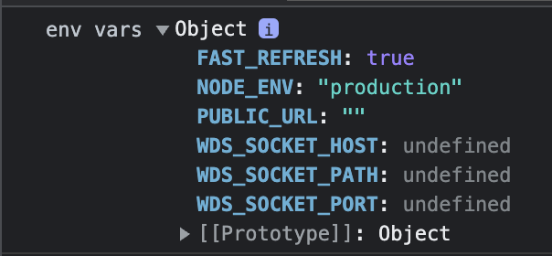

6/100 Days of Code
Paper Trader
Discord OAuth Refactoring
Not much code was written today, but a lot of time was spent planning about how to refactor things and what the next necessary features I plan to work on will be. After discussing with a more experienced SWE friend, the changes I’ll need to make are:
- Move my configuration variables (e.g.
const BASE_URL = process.env.REACT_APP_BASE_URL || "http://localhost:8080";) to a separateconfig.jsfile out of my React components.- This is to help better separate code logic from just setup related information.
- Change my Discord log in button from being a link appearing as a button, to be an actual button.
- Have an
onClickfunction that will make the request to Discord’s OAuth API. - Will also need to figure out how to update the browser to to show the OAuth page if the function making the request doesn’t load the page properly.
- Have an
- In order to properly prevent CSRF clickjacking, have to add some code logic that validates the random string generated for the
stateparameter inApp.tsxand thestateparameter sent back from Discord API.- At the moment, upon redirect the
stateparameter stored inlocalstorageis reset to the initial placeholder value oftoken. A quick change will be to add another conditional statement to check if there is a preexisting value and that it’s not token which valdiates thestate.
- At the moment, upon redirect the
- Need to update the
redirect_uriparameters in the Discord API requests to account for the deployed location.- Right now, the
redirect_uriparameters are hardcoded withlocalhostas the base value. However, once deployed these parameters will no longer be valid as they’re not URLs that will be interacted with in production. - As such, similar to how
BASE_URLis implemented, there will some configurationconstvariableREDIRECT_URIthat will have it’s value set based on whetherNODE_ENVisdevelopmentorproduction
- Right now, the
Long Term Refactoring Goals
These are goals that will have to be handled as things progress, but at the moment the above four are higher priority as they need to be finished to wrap up the Discord OAuth implementation.
-
Need to store the OAuth token to be reused for authorizing different paths. At the moment, the token isn’t being stored and is just used to access a user’s Discord profile. Storing the token may not be the necessary step, but somehow persisting the authorized information (either the token or the Discord username) will be needed to access protected routes down the line.
-
A bigger refactoring process will be breaking up the server routes. At the moment, to get things started, all the routing is in a single
index.tsfile, which is starting to get messy. Therefore, the routes in the file need to be split up into different main paths.- This will also be helpful when adding middleware as everything will be better organized
Learnings
- When trying to figure out the best way to handle how to set the
redirect_uriparameter, I came across this Stack Overflow discussion.-
So, I tried accessing the
process.env.PUBLIC_URLin a local build being served on my browser.
-
Although I expected the
PUBLIC_URLvalue to be the location that was loading my build, I saw theNODE_ENVhad a value ofproduction. Comparing this to mylocalhostdevelopment build,NODE_ENVhad a value ofdevelopment. With this information, that’s how my friend and I decided to utilizeNODE_ENVto set theREDIRECT_URIvalue.
-
Next Steps
- Pretty much the steps I outlined above for refactoring!